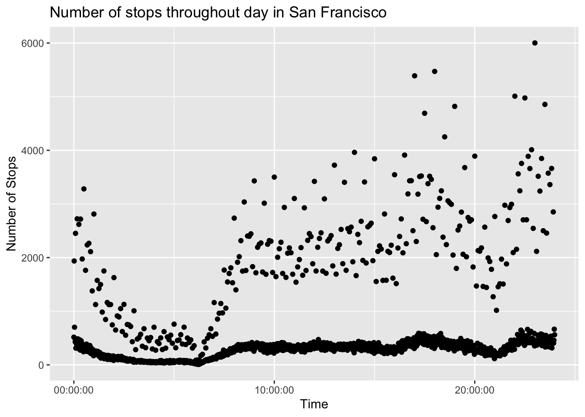
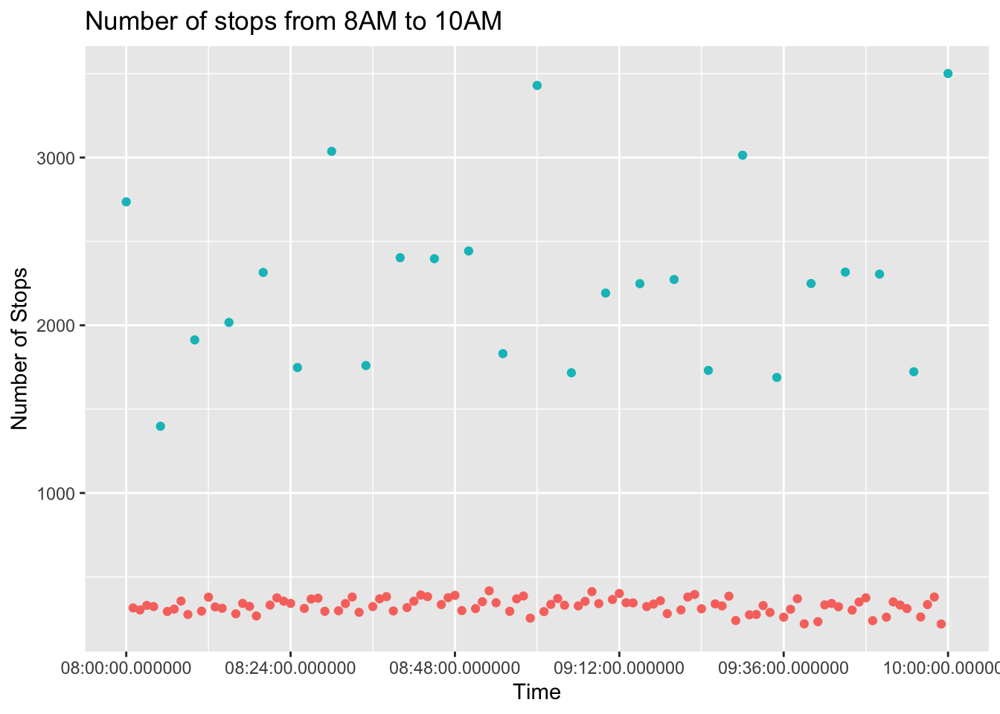
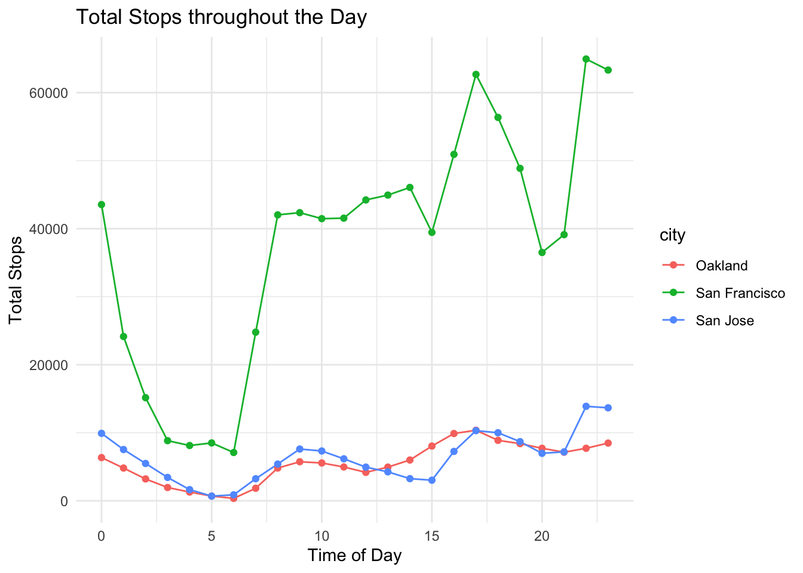
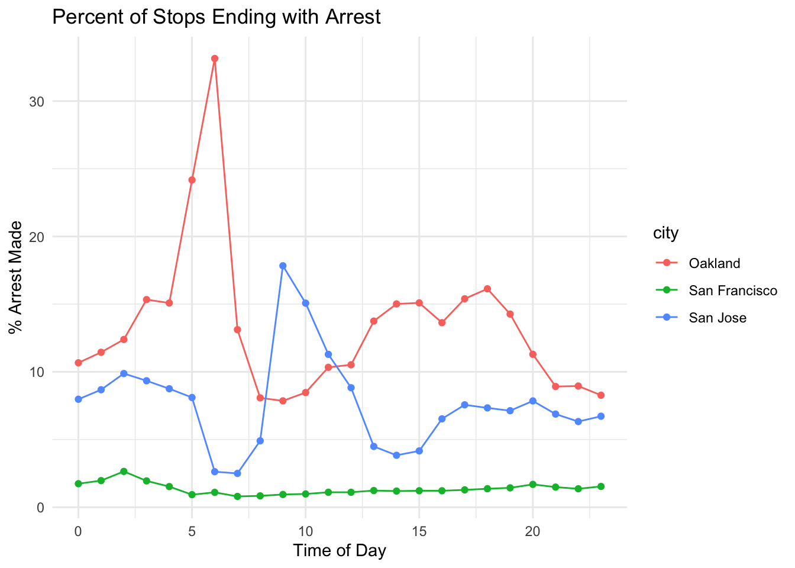

I investigate trends in traffic/pedestrian stop data from my hometown of San Francisco. The first analyses I did was frequency throughout the day. I sought to visualize the trends over the course of the day by grouping by time and plotting each count. The time for each stop was marked with the hour and minute (seconds not specified) for San Francisco, so I grouped by the time variable to count the frequency at each minute in the day.
Displaying records 1 - 10
Field
Type
Null
Key
Default
Extra
raw_row_number
text
YES
NA
date
date
YES
NA
time
time
YES
NA
location
text
YES
NA
lat
double
YES
NA
lng
double
YES
NA
beat
text
YES
NA
subject_age
bigint(20)
YES
NA
subject_race
text
YES
NA
subject_sex
text
YES
NA
Code
SELECTtime, COUNT(*) AS num_stopsFROM ca_san_francisco_2020_04_01WHEREtimeISNOTNULLGROUPBYtimeORDERBYtime;
Code
time_table %>%ggplot(aes(x = time, y = num_stops)) +geom_point() +labs(x ="Time", y ="Number of Stops", title ="Number of stops throughout day in San Francisco")

Code
SELECTtime, COUNT(*) AS num_stopsFROM ca_san_francisco_2020_04_01WHEREtimeBETWEEN'8:00:00'AND'10:00:00'GROUPBYtimeORDERBYtime;
Code
time_table8to10 %>%ggplot(aes(x = time, y = num_stops, color =minute(time) %in%c(0, 5, 10, 15, 20, 25, 30, 35, 40, 45, 50, 55))) +geom_point() +theme(legend.position ="none") +labs(x ="Time", y ="Number of Stops", title ="Number of stops from 8AM to 10AM")

Based on the plot of counts at each minute, there is an evident discrepancy in the time data. Upon observing the data, it is clear that for minute multiples of 5 (and especially 10) the count spikes (i.e. 1:30 much higher than 1:29 and 1:31). This can be viewed in the second plot (stop frequency from 8AM to 10AM), where times every 5 minute are blue. It follows that when an individual traffic stop is recorded, the time of day is often rounded to the nearest regular 5th minute. To account for this, I grouped data by rounding each time down to the hour. I include data from the three Bay Area data sets (San Francisco, Oakland, and San Jose).
Code
SELECTCOUNT(*) AS num_stops, HOUR(time) AShour, "San Francisco"AS cityFROM ca_san_francisco_2020_04_01GROUPBYhourUNIONALLSELECTCOUNT(*) AS num_stops, HOUR(time) AShour, "Oakland"AS city FROM ca_oakland_2020_04_01GROUPBYhourUNIONALLSELECTCOUNT(*) AS num_stops, HOUR(time) AShour, "San Jose"AS city FROM ca_san_jose_2020_04_01GROUPBYhour;
Code
bay_total %>%ggplot(aes(x = hour,y = num_stops, color = city )) +geom_line() +geom_point() +labs(x ="Time of Day", y ="Total Stops", title ="Total Stops throughout the Day") +theme_minimal()

San Francisco has substantially more stops, with greater variation during the day. There is a clear drop in the early morning after 12AM, before the count begins to rise again around 6AM. This is likely when the number of cars on the road starts to increase. The count increases until around 9AM, where the points fluctuate but remain relatively steady until an increase at around 4PM. The count peaks around 5-6PM, and decreases until around 9PM when it rises again. The stop counts in San Jose and Oakland follow similar patterns during the day. They seem to match (similar to San Francisco) commute patterns by rising in the morning from 5 until 9, and rising again in the afternoon.
# A tibble: 3 × 2
city mean
<chr> <int64>
1 Oakland 5336
2 San Francisco 36202
3 San Jose 6368
Code
SELECTHOUR(time) AShour, SUM(arrest_made) AS num_arrests, "San Francisco"AS city, (SUM(arrest_made)/COUNT(*)) *100AS arrest_percFROM ca_san_francisco_2020_04_01WHEREtimeISNOTNULLGROUPBYhourUNIONALLSELECTHOUR(time) AShour, SUM(arrest_made) AS num_arrests, "Oakland"AS city, (SUM(arrest_made)/COUNT(*)) *100AS arrest_perc FROM ca_oakland_2020_04_01WHEREtimeISNOTNULLGROUPBYhourUNIONALLSELECTHOUR(time) ashour, SUM(arrest_made) AS num_arrests, "San Jose"AS city, (SUM(arrest_made)/COUNT(*)) *100AS arrest_perc FROM ca_san_jose_2020_04_01WHEREtimeISNOTNULLGROUPBYhour;
Code
bay_table %>%ggplot(aes(x = hour,y = arrest_perc, color = city )) +geom_line() +geom_point() +labs(x ="Time of Day", y ="% Arrest Made", title ="Percent of Stops Ending with Arrest") +theme_minimal()

This plot use data from the three Bay Area data sets to show the percent of stops that end in an arrest at each hour during the day. Data points were grouped using the hour() function to round the time down to the nearest hour. Patterns across time vary between the cities. San Francisco has relatively a constant low arrest made% throughout the whole day. On the other hand, Oakland has much higher arrest/total stops values throughout the day, peaking at 5 to 7AM. San Jose has lower rates than Oakland for most of the day, but is higher around its peak from 9 to 11 AM. This could reflect different policing patterns and crime patterns in different cities during the day.
# A tibble: 3 × 2
city mean
<chr> <dbl>
1 Oakland 13.4
2 San Francisco 1.36
3 San Jose 7.69
The low percentage for San Francisco could be because of its much higher traffic stop count. Stricter guidelines for traffic and pedestrian stops may lead to a much higher enforcement of smaller infractions that do not necessarily end in an arrest. Oakland and San Jose may only focus on stopping more serious infractions, potentially due to administrative and resource limitations and greater area to cover.
Another potential issue could be reporting, where stops with no reported infraction are not officially recorded. This video reports on Oakland’s low clearance rate (arrests/reported crimes) and problems with data collection. The low clearance rate for reported crimes contrasts with the high rate of arrests made per stop from my analysis, but traffic stop arrests and reported crime arrests are different. These issues may lead to limited effort on minor traffic/pedestrian infractions, causing stops ending in arrests to take up a larger proportion.
References
E. Pierson, C. Simoiu, J. Overgoor, S. Corbett-Davies, D. Jenson, A. Shoemaker, V. Ramachandran, P. Barghouty, C. Phillips, R. Shroff, and S. Goel. “A large-scale analysis of racial disparities in police stops across the United States”. Nature Human Behaviour, Vol. 4, 2020.